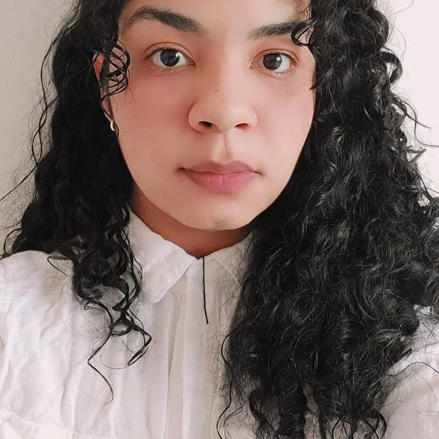

Mirella Fernandes
Majoring in systems analysis and development
Contato
- +55 21 9 9999-9999
- mirella@gmail.com
- linkedin.com/in/mirella-fernandes
- MirellaFernandes
Skills
HTML5 & CSS3
GIT & Github
JavaScript
Mirella Fernandes
Majoring in systems analysis and development
Contato
Skills
HTML5 & CSS3
GIT & Github
JavaScript
Olá, eu sou a Mirella e estou graduando em Análises e desenvolvimento de sistemas.
Sou iniciante em desenvolvimento, tenho conhecimento básico nas linguagens: HTML5, CSS3, JavaScript, Git e Github.
Participo de bootcamps e iniciativas gratuitas de instituições com projetos afim de agregar meu conhecimento.
Honda - Kobe Elija LTDA
03/2022 - 06-2022
Atendente CRM
Encarregada de agendamentos para revisão de veículos.
Grupo DPSP - Pacheco
03/2022 - 04/2022
Atendente de loja e balconista.
Atendimento direto com clientes e auxiliamento de medicamentos.
LIQ Corp S.A
06/2017 - 12/2021
Atendente Jr.
Atendimento emergêncial para a empresa Naturgy.
Universidade Veiga de Almeida - UVA
2022 - present
Análise e desenvolvimento de sistemas
Graduação em ADS
Instituto Federal Rio de Janeiro - IFRJ
2017-2017
Ensino médio
Completo
Ibeu
2013-2015
Curso de inglês
Curso de inglês feito no IBEU.